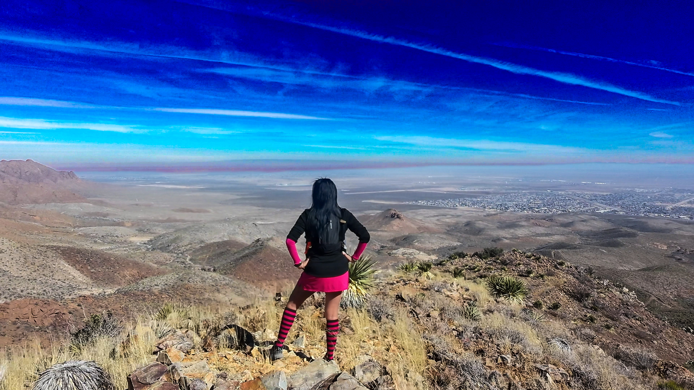

JustRunV is a site that shares my running journey, favorite trails, and the places that inspire me to stay active and grounded. This website serves as a platform to share my running journey as well as insights into the sport. Whether you're an experienced runner or just starting out, I hope you find inspiration and useful information here.
